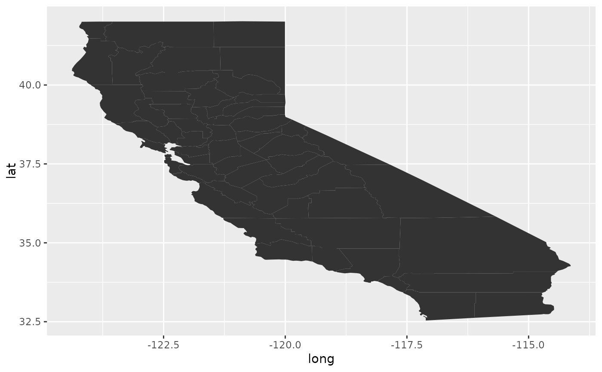
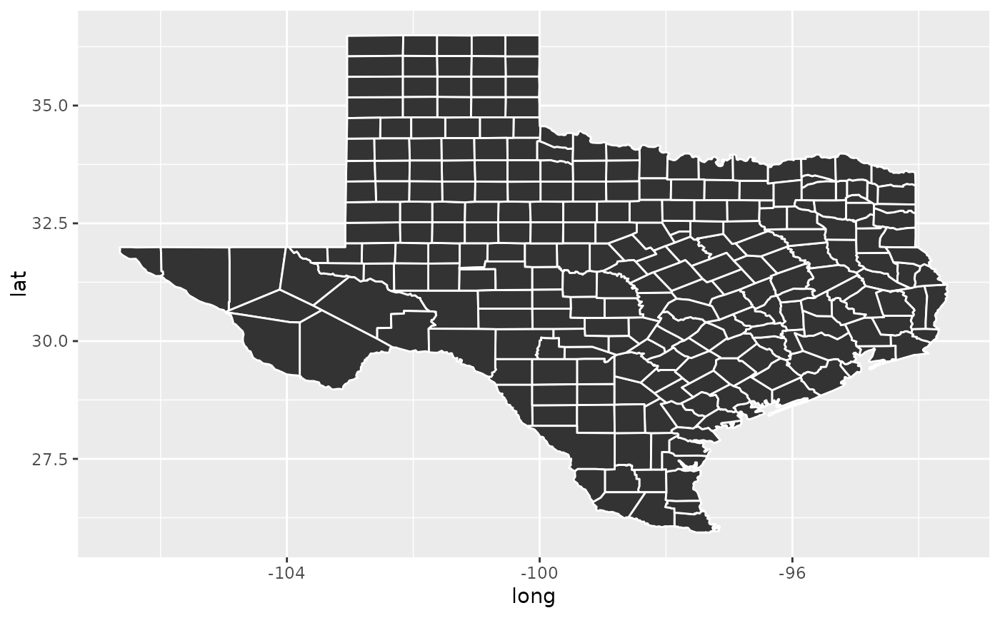

Tidy summarizes information about the components of a model. A model component might be a single term in a regression, a single hypothesis, a cluster, or a class. Exactly what tidy considers to be a model component varies across models but is usually self-evident. If a model has several distinct types of components, you will need to specify which components to return.
Usage
# S3 method for class 'map'
tidy(x, ...)Arguments
- x
A
mapobject returned frommaps::map().- ...
Additional arguments. Not used. Needed to match generic signature only. Cautionary note: Misspelled arguments will be absorbed in
..., where they will be ignored. If the misspelled argument has a default value, the default value will be used. For example, if you passconf.lvel = 0.9, all computation will proceed usingconf.level = 0.95. Two exceptions here are:
Value
A tibble::tibble() with columns:
- term
The name of the regression term.
- long
Longitude.
- lat
Latitude.
Remaining columns give information on geographic attributes and depend on the inputted map object. See ?maps::map for more information.
Examples
# load libraries for models and data
library(maps)
#>
#> Attaching package: ‘maps’
#> The following object is masked from ‘package:cluster’:
#>
#> votes.repub
#> The following object is masked from ‘package:purrr’:
#>
#> map
#> The following object is masked from ‘package:mclust’:
#>
#> map
library(ggplot2)
ca <- map("county", "ca", plot = FALSE, fill = TRUE)
tidy(ca)
#> # A tibble: 2,977 × 7
#> term long lat group order region subregion
#> <chr> <dbl> <dbl> <dbl> <int> <chr> <chr>
#> 1 1 -121. 37.5 1 1 california alameda
#> 2 2 -122. 37.5 1 2 california alameda
#> 3 3 -122. 37.5 1 3 california alameda
#> 4 4 -122. 37.5 1 4 california alameda
#> 5 5 -122. 37.5 1 5 california alameda
#> 6 6 -122. 37.5 1 6 california alameda
#> 7 7 -122. 37.5 1 7 california alameda
#> 8 8 -122. 37.5 1 8 california alameda
#> 9 9 -122. 37.5 1 9 california alameda
#> 10 10 -122. 37.5 1 10 california alameda
#> # ℹ 2,967 more rows
qplot(long, lat, data = ca, geom = "polygon", group = group)
#> Warning: `qplot()` was deprecated in ggplot2 3.4.0.
#> Warning: `fortify(<map>)` was deprecated in ggplot2 4.0.0.
#> ℹ Please use `map_data()` instead.
#> ℹ The deprecated feature was likely used in the ggplot2 package.
#> Please report the issue at
#> <https://github.com/tidyverse/ggplot2/issues>.

tx <- map("county", "texas", plot = FALSE, fill = TRUE)
tidy(tx)
#> # A tibble: 4,488 × 7
#> term long lat group order region subregion
#> <chr> <dbl> <dbl> <dbl> <int> <chr> <chr>
#> 1 1 -95.8 31.5 1 1 texas anderson
#> 2 2 -95.8 31.6 1 2 texas anderson
#> 3 3 -95.8 31.6 1 3 texas anderson
#> 4 4 -95.7 31.6 1 4 texas anderson
#> 5 5 -95.7 31.6 1 5 texas anderson
#> 6 6 -95.7 31.6 1 6 texas anderson
#> 7 7 -95.8 31.7 1 7 texas anderson
#> 8 8 -95.8 31.7 1 8 texas anderson
#> 9 9 -95.8 31.6 1 9 texas anderson
#> 10 10 -95.8 31.6 1 10 texas anderson
#> # ℹ 4,478 more rows
qplot(long, lat,
data = tx, geom = "polygon", group = group,
colour = I("white")
)
